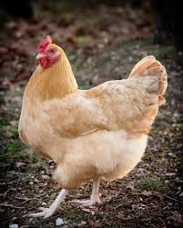
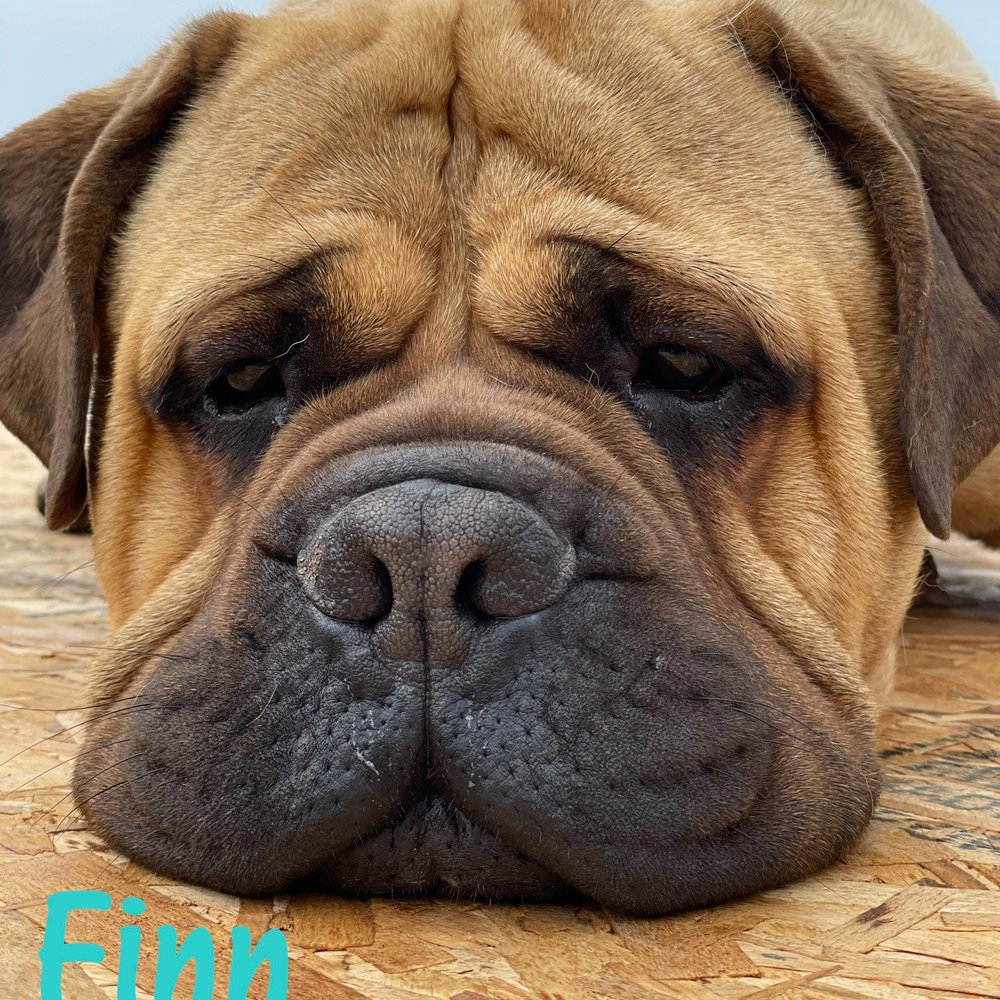
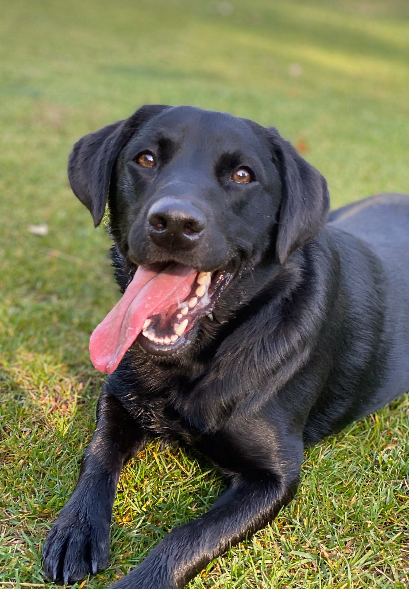

I LOVE chickens! The chicken above is one of my favorite breeds: a buff orpington. Aren't they so cute? Not to mention, they're SO kind and friendly!

I also LOVE dogs! These are the closest I could get to what dogs look like the ones I have. We have 1 bullmastiff (to the right), and 1 black lab (to the left). But, he's technically a black lab part chesapeake bay.
I also like to do things. I like to read, do soccer, cook, pet our animals, do math, and more!
If you could have one wish for anything but more wishes, what would it be?
For me, I would have loved to say more wishes but, if I couldn't, I'd probably wish for my family to be healthy and live good lives. Or, I might have wished to remove some mistakes in my life. However, I'd probably choose the family one because my family is very important to me.